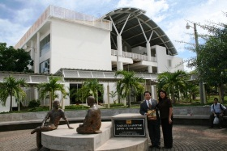
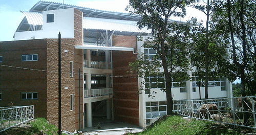
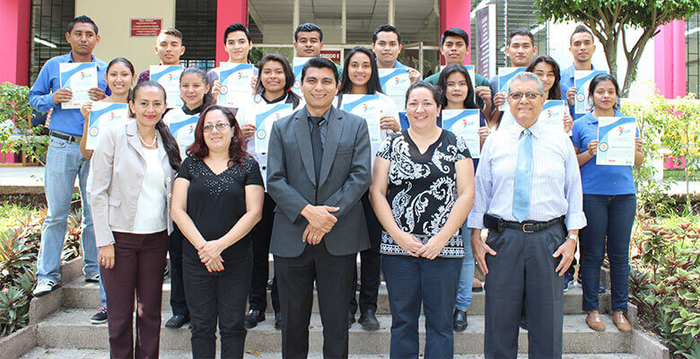
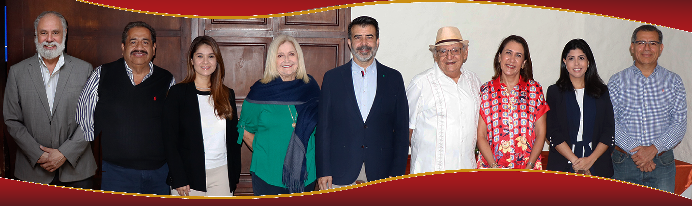
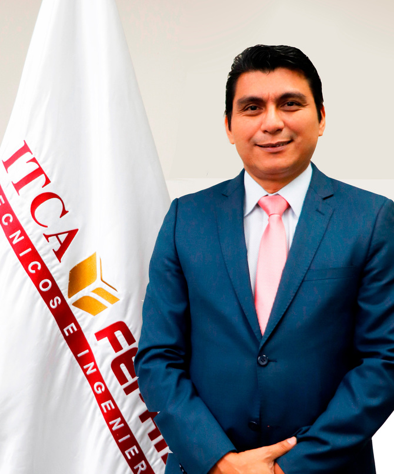
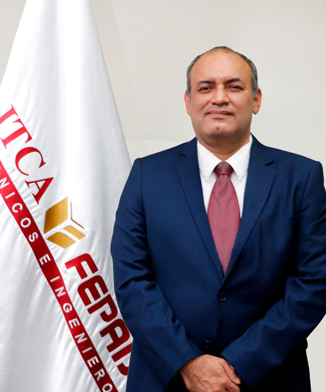
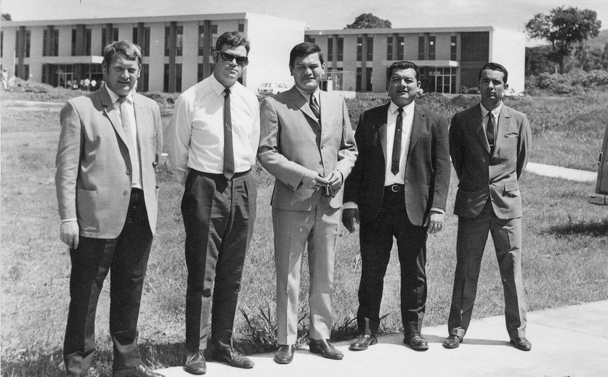

La Escuela Especializada en Ingeniería ITCA-FEPADE cuenta con una reconocida trayectoria académica,
camino
sustentado por el esfuerzo y la visión que dio paso a la concretización de su objetivo de fundación:
impulsar la capacitación y el recurso humano de El Salvador. Estamos comprometidos con la calidad
académica,
la empresarialidad y la pertinencia de nuestra oferta educativa, por ello, hemos desarrollado un modelo
educativo que se caracteriza en la constante innovación del sistema de enseñanza aprendizaje, en la
actualización de la tecnología y la formación del personal docente, con el fin que nuestros estudiantes
obtengan las mejores oportunidades en el mercado laboral.
Día a día seguimos viendo más allá de las adversidades y nos comprometemos a trabajar en pro de la
educación,
orientada a la empleabilidad y la productividad, porque solo con una educación de calidad podemos
garantizar el progreso de nuestro país.
Formar profesionales integrales y competentes en las áreas tecnológicas
que tengan demanda y oportunidad en
el mercado local, regional y
mundial tanto como trabajadores y como empresarios.
Ser una institución educativa líder en educación tecnológica a nivel nacional y regional, comprometida con la calidad, la empresarialidad y la pertinencia de nuestra oferta educativa.
Excelencia, Integridad, Espiritualidad, Cooperación y Comunicación.
“Aprender – haciendo”
El éxito de los profesionales de ITCA-FEPADE es el modelo “Aprender-Haciendo”, que combina la teoría con la práctica, desarrollando éstas en un primer momento en los talleres y laboratorios de nuestros campus y posteriormente en ambientes reales, gracias a la gestión y vinculación: Universidad – Empresa, lo que asegura la aceptación de nuestros graduados en el ámbito laboral.
Enseñanza Dual
Aprender en la empresa bajo el Sistema Dual, fue la novedosa formación profesional que se implementó en El Salvador en el año 2006, gracias a la visión de la mejora continua de la Escuela Especializada en Ingeniería ITCA-FEPADE. Este modelo de formación sencillo y de mucho éxito tuvo su origen en Europa y fue trasferido a ITCA por la Cooperación Alemana. Actualmente muchas compañías del país que cuentan con maquinaria y procesos modernos, invierten en la Formación Dual, que se basa en el principio de “aprender haciendo”. Los estudiantes del ITCA combinan la teoría y la práctica en dos años, para obtener un título como técnicos. Unos de los grandes beneficios para los jóvenes es que todos reciben beca de estudios, adquieren conocimientos y experiencia laboral, ya que en el período de duración de la carrera, realizan ciclos alternos de dos meses de clases teóricas-prácticas en ITCA y dos meses de práctica en un ambiente real dentro de la empresa apadrinadora.

De Izquierda a derecha
Ing. Rafael Ibarra, Vicepresidente; Ing. Jesús Martínez, Director; Dra. Carolina Brito, Fiscal; Lic. Eugenia
Suay de Castrillo, Secretaria; Lic. Daniel Cohen, Presidente; Ing. Francisco Marroquín, Director; Lic. Ana
Cristina Arango, Directora; Lic. Camila Mena Meléndez, Directora y Dr. William Mejía, Director.

Ing. Carlos Arriola
Enero 2023 a la fecha

Ing. Christian Guevara
Enero 2023 a la fecha

HISTORIA
Fundada en 1969, la Escuela Especializada en Ingeniería ITCA-FEPADE, es una institución estatal con
administración privada, conformada actualmente por cinco campus: la Sede Central en Santa Tecla y 4
Centros Regionales ubicados en San Miguel, Santa Ana, Zacatecoluca y La Unión, estos dos últimos
bajo modelo MEGATEC.
INAUGURACIÓN DE NUESTROS CAMPUS
1969 Sede Central Santa Tecla bajo Administración Inglesa y a partir de 1990 bajo Administración
FEPADE
1997 Regional Zacatecoluca (Bajo Modelo MEGATEC)
1998 Regional San Miguel
1999 Regional Santa Ana
2006 Regional La Unión (Bajo Modelo MEGATEC)
Nuestro objetivo es formar profesionales en educación técnica superior, orientados a fortalecer el
desarrollo económico y social del país.
En la actualidad la oferta académica incluye carreras técnicas e ingenierías y la capacitación a
través de cursos y diplomados especializados.

